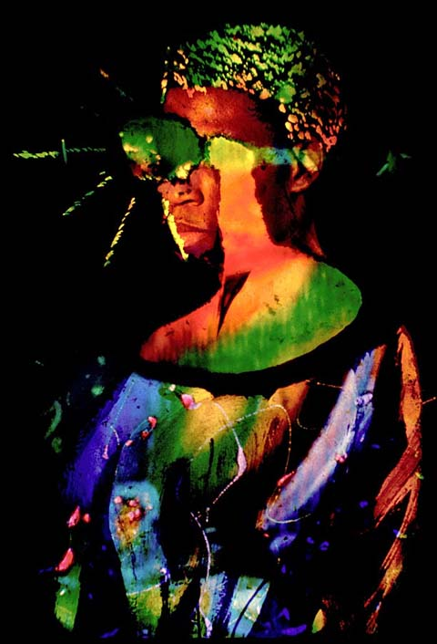

Stephen Burns
Chrome Allusion
Stephen Burns
Chrome Allusion
Stephen Burns is a 39 year old African American artist. He lives in the San Diego area and is president of the San Diego Photoshop Users group. He teaches Photoshop and photography, and uses Painter, Lightwave and Illustrator, as well of course as Photoshop. He has been influenced by such masters as Jackson Pollock, Roberto Matta, Franz Kline and Wassily Kandinsky. He calls his art Chrome Allusion, and says it is aimed at the spiritual and addresses the sixth sense. He has won a first prize in the San Francisco Seybold digital art contest and his work has been exhibited internationally.
 |